전기철도기사 (2021-08-14 기출문제)
1과목: 전기철도공학
1. 곡선인 경우 열차가 통과할 때의 원심력에 의해 차량이 선로 외측으로 넘어지는 것을 막고 외측 레일을 내측 레일보다 높게 부설하여 원심력과 중력의 균형을 도모하는데, 이고저차는?
- 캔트
- 슬랙
- 구배
- 확장
(정답률: 알수없음)

2. 직류 1500V 병렬급전 계통에서 그림과 같은 단위로 차량 부하가 I1(A), I2(A) 로 분포하고 있을 때, B 변전소에서 공급되는 전류 IB(A) 는? (단, 급전선로의 단위 길이 당 저항은 같다.)
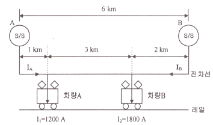
- 1400
- 1600
- 1800
- 2000
(정답률: 알수없음)
3. 교류급전방식에서 위상이 90° 다른 M상과 T상이 혼촉한 경우의 고장 전류식은? (단, VMT: MT 혼촉전압, IMT : MT 혼촉전류, ZAT: AT 누설임피던스，Z0 : 전원 임피던스, ZM, ZT : 변압기 임피던스)
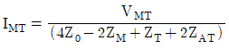
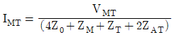
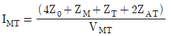
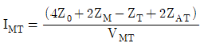
(정답률: 39%)
4. 전차선로의 파동전파속도(C)를 산출하는 공식은? (단, T: 전차선 장력(N), ρ: 단위길이 당 질량(kg/m))
- C=T×ρ
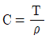
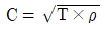
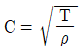
(정답률: 알수없음)
5. 두 금속의 상대 전위차로부터 알 수 있는 것은?
- 부하의 정도
- 부시의 정도
- 전류의 정도
- 저항의 정도
(정답률: 알수없음)
6. 변전소로부터 송출된 전류가 급전선 등을 통하여 전기차에 집전되기까지의 사이에 주회로인 전차선 이외의 전선, 가선금구 등에 흐르는 전류를 순환전류라 한다. 다음 중 순환전류의 경로로 볼 수 없는 것은 어느 것인가?
- 급전분기장치
- M-T 균압선
- 보호선
- 조가선
(정답률: 알수없음)
7. 동력차의 동륜점착계수(U)를 올바르게 표시한 식은? (단, W를 동력자의 중량(kgf), F를 견인력(kgf)이라 한다.)
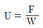
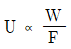
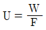
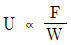
(정답률: 20%)
8. 이종금속의 접촉으로 인한 부식을 방지하기 위한 방법이 아닌 것은?
- 중간금속을 삽입
- 이종 금속간을 절연
- 전위차가 작은 금속 선정
- 고유저항이 작은 금속 선정
(정답률: 알수없음)
9. 열차저항의 분류에 들어가지 않는 것은?
- 주행저항
- 곡선저항
- 출발저항
- 누설저항
(정답률: 알수없음)
10. 고속구간 일반개소의 인류장치에서 전차선과 조가선의 최대 인류구간은 얼마로 한정 하여야 하는가?
- 800m
- 1000m
- 1250m
- 1500m
(정답률: 30%)
11. 가공전차선로의 이선에 따른 장애방지 대책이 아닌 것은?
- 전차선의 높이를 높게 한다.
- 전차선로의 경점을 작게 한다.
- 내마모성이 우수한 재료를 사용한다.
- 2대의 팬터그래프를 1조로 하여 운행한다.
(정답률: 50%)
12. 신축 허용범위를 600mm 할 때 활차식 자동장력조정장치에서 장력추 취부용 지지대 간격에 따라 허용되는 적정한 전차선의 길이는 약 몇 m 인가? (단, 전차선의 선팽창계수를 1.7×10-5, 최고 및 최저의 온도 차를 60℃로 한다.)
- 147
- 294
- 588
- 1176
(정답률: 알수없음)
13. 가공전차선의 편위는 직선구간에서 좌우 몇 mm를 표준으로 하고 있는가?
- 100
- 200
- 300
- 400
(정답률: 알수없음)
14. 전기철도에서 급전선로의 보호계전기가 아닌 것은?
- 거리계전기
- 과전류계전기
- 재폐로계전기
- 비율차동계전기
(정답률: 40%)
15. 다음 중 흡상변압기의 주요 역할에 대한 설명으로 옳은 것은?
- 전압강하를 보상한다.
- 역률을 개선시킨다.
- 전차선의 절연을 향상시킨다.
- 통신유도장애를 경감한다.
(정답률: 알수없음)
16. 다음의 철도선로에 관한 내용 중 틀린 것은?
- 궤도를 구성하는 3요소는 레일, 침목, 도상이다.
- 선로의 동급이 1급선인 경우 설계속도가 200km/시간 이하이다.
- 실제의 궤간은 1435 + 슬랙 ± 공차 이내가 되도록 하고 있다.
- 우리나라 철도에서의 완화곡선은 나선곡선방식을 채택하고 있다.
(정답률: 40%)
17. 열차속도가 80km/h이하 일 때, 교류 강체 전차선로 두 지지점간의 최대 고저차는?
- ±5mm
- ±7mm
- ±8mm
- ±10mm
(정답률: 알수없음)
18. 3상 전파 정류방식을 사용하는 직류변전소에서 교류전압을 1180V로 하였을 때, 무부하시 발생하는 정류기 DC 전압 (V)은 약 얼마인가?
- 1450
- 1500
- 1590
- 1650
(정답률: 28%)
19. 직류 급전방식에서 온도상승 개소가 아닌 것은?
- 급전 분기선
- 급전 분기 개소의 금구
- 급전 분기점 인근의 전차선
- 변전소 급전 인출구의 급전선
(정답률: 20%)
20. 전기철도의 표준전압이 아닌 것은?
- 직류 750V
- 교류단상 25000V
- 직류 1500V
- 교류단상 50000V
(정답률: 알수없음)
2과목: 전기철도 구조물공학
21. 지선과 전주 사이의 표준 취부각도는 45°로 하고 있다. 최소 취부각도는 얼마인가?
- 25°
- 30°
- 35°
- 40°
(정답률: 10%)
22. 탄성한도 내에서 인장하중을 받는 봉에 발생하는 응력이 2배가 되면 단위체적 속에 저장되는 탄성 에너지는 몇 배가 되는가?
- 1/2
- 2
- 1/4
- 4
(정답률: 0%)
23. 힘의 3요소는?
- 면적, 방향, 작용점
- 크기, 방향, 작용점
- 부피, 방향, 작용점
- 밀도, 방향, 작용점
(정답률: 46%)
24. 탄성한도 내에서 봉에 축방향 인장력이 작용할 때, 봉의 체적변형률은? (단, E=탄성계수, σ=인장응력, v=포와송비)
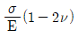
- E(1-2v)
- σ(1+2v)
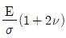
(정답률: 알수없음)
25. 단순보에 모멘트 하중이 작용할 때의 설명으로 틀린 것은?
- 양 지점의 반력의 크기는 모멘트의 작용위치에 관계가 없다.
- 전단력도의 면적 대수합은 휨모멘트도의 종거와 같다.
- 모멘트 하중이 작용하는 위치에서 좌우측의 휨모멘트는 값이 다르다.
- 전단력을 계산하는데 모멘트 하중은 제외된다.
(정답률: 알수없음)
26. 라멘구조물의 부정정차수는?
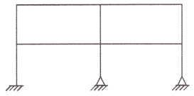
- 8차
- 9차
- 10차
- 11차
(정답률: 20%)
27. 태풍이 불어 왔을 때 10분간 평균풍속이 25m/s로 관측되었다. 순간풍속의 관측값이 없었다면 이 태풍의 5초간 순간풍속은 약 얼마의 바람이 불었다고 추정되는가?
- 13m/s
- 20m/s
- 27m/s
- 34m/s
(정답률: 37%)
28. 철주의 기초를 시공한 후 상부주체를 볼트로 체결하여 시공하는 방식은?
- 직 매입
- 핀(Pin) 매입
- 앵카볼트 매입
- 근계 매입
(정답률: 20%)
29. 단면의 폭이 b, 높이가 h인 직사각형 단면에서 도심축에 대한 회전반경은?
- h/2√3
- h/√3
- h/√6
- h/2√6
(정답률: 알수없음)
30. 단면적 4ccm2, 길이 2m의 강선에 400kg의 하중을 가하였더니 0.8cm가 늘어났다. 이 때 종탄성 계수(t/cm2)는 얼마인가?
- 2.0×104
- 2.5×104
- 2.75×104
- 3.0×104
(정답률: 알수없음)
31. 기초의 면적이 4m2인 사각형 단면의 기초가 있다. 기초 지반의 허용지지력이 200kN/m2 이라고 할 때, 기초가 받을 수 있는 하중의 최대 크기(kN)는?
- 400
- 600
- 800
- 1000
(정답률: 37%)
32. P는 인장력이고 A가 단면적일 때, 응력(σ)은?
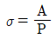
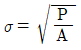
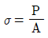
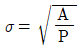
(정답률: 20%)
33. 토크를 T라 할 때 전기자 직경 d는? (단, F: 전기자 도체 1본이 받는 힘, z: 전기자 도체의 총수)
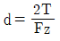
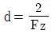
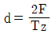
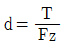
(정답률: 알수없음)
34. 합성전차선을 지지물측으로 당기는 개소에 사용되는 가동브래킷의 종류는?
- I형
- O형
- F형
- Z형
(정답률: 알수없음)
35. 힘의 평형 조건 중 힘의 표시방법에서 선분의 길이로 표시하는 것은?
- 힘의 크기
- 힘의 방향
- 힘의 작용점
- 힘의 이동점
(정답률: 알수없음)
36. 지선은 일반적으로 전주에 작용하는 수평하중의 몇 %를 부담하는가?
- 50
- 75
- 100
- 125
(정답률: 알수없음)
37. 가공 전차선로를 설계할 때 온도변화가 가장 많은 영향을 주는 것은?
- 궤도관계
- 파량(전기차) 운전관계
- 공사 시행관계
- 전선의 이도와 장력관계
(정답률: 알수없음)
38. 트러스에서 전단력이나 모멘트가 생기지 않는다고 가정할 때, 트러스에서 발생하는 부재력은?
- 외응력
- 축력
- 휨모멘트
- 비틀림모멘트
(정답률: 20%)
39. 프리텐션 콘크리트 전주의 호칭이 10-35-N6500이다. 여기에서 6500은 무엇을 의미하는가?
- 허용 경간
- 설계 모멘트
- 전주 말구의 지름
- 전주 하중점의 높이
(정답률: 알수없음)
40. 풍속이 30m/s이고 바람을 받는 콘크리트 전주의 수직투영면적이 3m2 일 때, 콘크리트 전주에 가해지는 풍압 (kgf)은 약 얼마인가? (단, 풍력계수는 1.3 이다.)
- 55
- 109
- 219
- 439
(정답률: 알수없음)
3과목: 전기자기학
41. 간격이 d(m) 이고 면적이 S(m2)인 평행판 커패시터의 전극 사이에 유전율이 ɛ인 유전체를 넣고 전극 간에 V(V) 의 전압을 가했을 때, 이 커패시터의 전극판을 떼어내는데 필요한 힘의 크기(N)는?
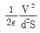
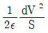
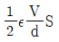
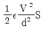
(정답률: 알수없음)
42. 그림과 같이 단면적 S(m2) 가 균일한 환상철심에 권수 N1인 A코일과 권수 N2인 B코일이 있을 때, A코일의 자기 인덕턴스가 L1(H)이라면 두 코일의 상호 인덕턴스 M(H)는? (단, 누설자속은 0이다.)
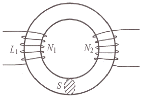
- L1N2/N1
- N2/L1N1
- L1N1/N2
- N1/L1N2
(정답률: 10%)
43. 패러데이관(Faraday tube)의 성질에 대한 설명으로 틀린 것은?
- 패러데이관 중에 있는 전속수는 그 관속에 진전하가 없으면 일정하며 연속적이다.
- 패러데이관의 양단에는 양 또는 음의 단위 진전하가 존재하고 있다.
- 패러데이관 한 개의 단위 전위차 당 보유에너지는 1/2 J이다
- 패러데이관의 밀도는 전속밀도와 같지 않다.
(정답률: 10%)
44. 공기 중 무한 평면도체의 표면으로부터 2m 떨어진 곳에 4C의 점전하가 있다. 이 점전하가 받는 힘은 몇 N 인가?
- 1/πɛ0
- 1/4πɛ0
- 1/8πɛ0
- 1/16πɛ0
(정답률: 10%)
45. 내압이 2.0kV이고 정전용량이 각각 0.01μF, 0.02μF, 0.04μF인 3개의 커패시터를 직렬로 연결했을 때 전체 내압은 몇 V 인가?
- 1750
- 2000
- 3500
- 4000
(정답률: 알수없음)
46. 그림과 같이 극판의 면적이 S(m2)인 평행판 커패시터에 유전율이 각각 ɛ1=4, ɛ2=2인 유전체를 채우고 a, b 양단에 V(V) 의 전압을 인가했을 때 ɛ1, ɛ2인 유전체 내부의 전계의 세기 E1과 E2의 관계식은? (단, σ(C/m2)는 면전하밀도이다.)
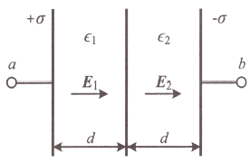
- E1=2E2
- E1=4E2
- 2E1=E2
- E1=E2
(정답률: 알수없음)
47. 반지름이 r(m)인 반원형 전류 I(A)에 의한 반원의 중심(O)에서 자계의 세기 (AT/m)는?
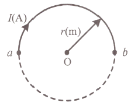
- 2I/r
- I/r
- I/2r
- I/4r
(정답률: 10%)
48. 평행판 커패시터에 어떤 유전체를 넣었음 때 전속밀도가 4.8×10-7C/m2 이고 단위 체적당 정전에너지가 5.3×10-3J/m3이었다. 이 유전체의 유전율은 약 몇 F/m 인가?
- 1.15×10-11
- 2.17×10-11
- 3.19×10-11
- 4.21×10-11
(정답률: 10%)
49. 히스테리시스 곡선에서 히스테리시스 손실에 해당하는 것은?
- 보자력의 크기
- 잔류자기의 크기
- 보자력과 잔류자기의 곱
- 히스테리시스 곡선의 면적
(정답률: 0%)
50. 정상 전류계에서 J는 전류밀도, σ는 도전율, ρ는 고유저항, E는 전계의 세기일 때, 옴의 법칙의 미분형은?
- J=σE
- J=E/σ
- J=ρE
- J=ρσE
(정답률: 알수없음)
51. 유전율 ɛ, 투자율 μ인 매칠 내에서 전자파의 전파속도는?
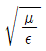
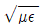
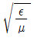
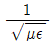
(정답률: 알수없음)
52. 쌍극자 모멘트가 M(C·m) 인 전기쌍극자에 의한 임의의 점 P에서의 전계의 크기는 전기 쌍극자의 중심에서 축방향과 점 P를 잇는 선분 사이의 각이 얼마일 때 최대가 되는가?
- 0
- π/2
- π/3
- π/4
(정답률: 알수없음)
53. 다음 중 기자력(magnetomotive force) 에 대한 설명으로 틀린 것은?
- SI 단위는 암페어(A)이다.
- 전기회로의 기전력에 대응한다
- 자기회로의 자기저항과 자속의 곱과 동일하다.
- 코일에 전류를 흘렸을 때 전류밀도와 코일의 권수의 곱의 크기와 같다.
(정답률: 알수없음)
54. 평균 반지름(r)이 20cm, 단면적(S)이 6cm2인 환상 철심에서 권선수(N)가 500회인 코일에 흐르는 전류(I)가 4A 일 때 철심 내부에서의 자계의 세기(H)는 약 몇 AT/m인가?
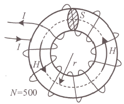
- 1590
- 1700
- 1870
- 2120
(정답률: 알수없음)
55. 길이가 10cm이고 단면의 반지름이 1cm인 원통형 자성체가 길이 방향으로 균일하게 자화되어 있을 때 자화의 세기가 0.5Wb/m2이라면 이 자성체의 자기 모멘트 (Wb·m)는?
- 1.57×10-5
- 1.57×10-4
- 1.57×10-3
- 1.57×10-2
(정답률: 10%)
56. 진공 중에서 점 (0, 1)m의 위치에 -2×10-9C의 점전하가 있을 때, 점(2, 0)m에 있는 1C의 점전하에 작용하는 힘은 몇 N인가? (단,
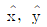
는 단위벡터이다.)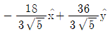
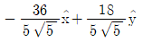
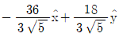
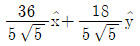
(정답률: 알수없음)
57. 그림과 같이 공기 중 3개의 동심 구도체에서 내구(A)에만 전하 Q를 주고 외구(B)를 접지하였을 때 내구(A)의 전위는?
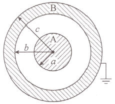
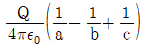
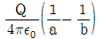
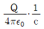
- 0
(정답률: 알수없음)
58. 속도 v의 전자가 평등자계 내에 수직으로 들어갈 때, 이 전자에 대한 설며응로 옳은 것은?
- 구면위에서 회전하고 구의 반지름은 자계의 세기에 비례한다.
- 원운동을 하고 원의 반지름은 자계의 세기에 비례한다.
- 원운동을 하고 원의 반지름은 자계의 세기에 반비례한다.
- 원운동을 하고 원의 반지름은 전자의 차음 속도의 제곱에 비례한다.
(정답률: 20%)
59. 간격 d(m), 면적 S(m2) 의 평행판 전극 사이에 유전율이 ɛ인 유전체가 있다. 전극 간에 v(t) = Vmsinωt의 전압을 가했을 때, 유전체 속의 변위전류밀도 (A/m2) 는?
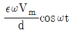
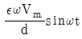
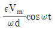
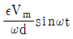
(정답률: 알수없음)
60. 자기 인덕턴스가 각각 L1, L2인 두 코일의 상호 인덕턴스가 M일 때 결합 계수는?
- M/L1L2
- L1L2/M
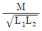
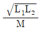
(정답률: 0%)
4과목: 전력공학
61. 옥내배선을 단상 2선식에서 단상 3선식으로 변경하였을 때, 전선 1선당 공급전력은 약 몇 배 증가하는가? (단, 선간전압(단상 3선식의 경우는 중성선과 타선간의 전압), 선로전류(중성선의 전류제외) 및 역률은 같다.)
- 0.71
- 1.33
- 1.41
- 1.73
(정답률: 알수없음)
62. 수압철관의 안지름이 4m인 곳에서의 유속이 4m/s이다. 안지름이 3.5m인 곳에서의 유속(m/s)은 약 얼마인가?
- 4.2
- 5.2
- 6.2
- 7.2
(정답률: 알수없음)
63. 단락용량 3000MVA인 모선의 전압이 154kV라면 등가 모선 임피던스(Ω)는 약 얼마인가?
- 5.81
- 6.21
- 7.91
- 8.71
(정답률: 28%)
64. 송전 선로의 보호 계전 방식이 아닌 것은?
- 전류 위상 비교 방식
- 전류 차동 보호 계전 방식
- 방향 비교 방식
- 전압 균형 방식
(정답률: 10%)
65. 가공송전선의 코로나 임계전압에 영향을 미치는 여러 가지 인자에 대한 설명 중 틀린 것은?
- 전선표면이 매끈할수록 임계전압이 낮아진다.
- 날씨가 흐릴수록 엄계전압은 낮아진다.
- 기압이 낮을수록, 온도가 높을수록 임계전압은 낮아진다.
- 전선의 반지름이 클수록 임계전압은 높아진다.
(정답률: 알수없음)
66. 어느 화력발전소에서 40000kWh를 발전하는데 발열량 860kcal/kg의 석탄이 60톤 사용된다. 이 발전소의 열효율(%)은 약 얼마인가?
- 56.7
- 66.7
- 76.7
- 86.7
(정답률: 알수없음)
67. 경간이 200m인 가공 전선로가 있다. 사용 전선의 길이는 경간보다 약 몇 m 더 길어야 하는가? (단, 전선의 1m당 하중은 2kg, 인장하중은 4000kg이고, 풍압하중은 무시하며, 전선의 안전율은 2 이다.)
- 0.33
- 0.61
- 1.41
- 1.73
(정답률: 10%)
68. 전력계통의 전압조정설비에 대한 특징으로 틀린 것은?
- 병렬콘덴서는 진상능력만을 가지며 병렬리액터는 진상능력이 없다.
- 동기조상기는 조정의 단계가 불연속적이나 직렬콘덴서 및 병렬리액터는 연속적이다.
- 동기조상기는 무효전력의 공급과 흡수가 모두 가능하여 진상 및 지상용량을 갖는다.
- 병렬리액터는 경부하시에 계통 전압이 상승하는 것을 억제하기 위하여 초고압 송전선 등에 설치된다.
(정답률: 0%)
69. 선로고장 발생 시 고장전류를 차단할 수 없어 리클로저와 같이 차단 기능이 있는 후비보호 장치와 함께 설치되어야 하는 장치는?
- 배선용차단기
- 유입개폐기
- 컷아웃스위치
- 섹셔널라이저
(정답률: 알수없음)
70. 환상선로의 단락보호에 주로 상요하는 계전방식은?
- 비율차동계전방식
- 방향거리계전방식
- 과전류계전방식
- 선택접지계전방식
(정답률: 알수없음)
71. 송전선로에 단도체 대신 복도체를 사용하는 경우에 나타나는 현상으로 틀린 것은?
- 전선의 작용인덕턴스를 감소시킨다.
- 선로의 작용정전용량을 증가시킨다.
- 전선 표면의 전위경도를 저감시킨다.
- 전선의 코로나 임계전압을 저감시킨다.
(정답률: 알수없음)
72. 송전선의 특성 임피던스의 특징으로 옳은 것은?
- 선로의 길이가 길어질수록 값이 커진다.
- 선로의 길이가 길어질수록 값이 작아진다.
- 선로의 길이에 따라 값이 변하지 않는다.
- 부하용량에 따라 값이 변한다.
(정답률: 알수없음)
73. 전력계통의 중성점 다중 접지방식의 특징으로 옳은 것은?
- 통신선의 유도장해가 적다.
- 합성 접지 저항이 매우 높다.
- 건전상의 전위 상승이 매우 높다.
- 지락보호 계전기의 동작이 확실하다.
(정답률: 20%)
74. 유효낙차 100m, 최대 유량 20m3/s의 수차가 있다. 낙차가 81m로 감소하면 유량(m3/s)은? (단, 수차에서 발생되는 손실 등은 무시하며 수차 효율은 일정하다.)
- 15
- 18
- 24
- 30
(정답률: 알수없음)
75. 동작 시간에 따른 보호 게전기의 분류와 이에 대한 설명으로 틀린 것은?
- 순한시 계전기는 설정된 최소동작전류 이상의 전류가 흐르면 즉시 동작한다.
- 반한시 계전기는 동작시간이 전류값의 크기에 따라 변하는 것으로 전류값이 클수록 느리게 동작하고 반대로 전류값이 작아질수록 빠르게 동작하는 계전기이다.
- 정한시 계전기는 설정된 값 이상의 전류가 흘렀을 때 동작 전류의 크기와는 관계없이 항상 일정한 시간 후에 동작하는 계전기이다.
- 반한시·정한시 계전기는 어느 전류값까지는 반한시성이지만 그 이상이 되면 정한시로 동작하는 계전기이다.
(정답률: 알수없음)
76. 송전선에 직렬콘덴서르 ㄹ설치하였을 때의 특징으로 틀린 것은?
- 선로 중에서 일어나는 전압강하를 감소시킨다.
- 송전전력의 증가를 꾀할 수 있다.
- 부하역률이 좋을수록 설치효과가 크다.
- 단락사고가 발생하는 경우 사고전류에 의하여 과전압이 발생한다.
(정답률: 알수없음)
77. 중성점 접지 방식 중 직접접지 송전방식에 대한 설명으로 틀린 것은?
- 1선 지락 사고 시 지락전류는 타 접지방식에 비하여 최대로 된다.
- 1선 지락 사고 시 지락계전기의 동작이 확실하고 선택차단이 가능하다.
- 통신선에서의 유도장해는 비접지방식에 비하여 크다.
- 기기의 절연레벨을 상승시킬 수 있다.
(정답률: 알수없음)
78. 3상용 차단기의 정격차단용량은 그 차단기의 정격전압과 정격차단전류와의 곱을 몇 배한 것인가?
- 1/√2
- 1/√3
- √2
- √3
(정답률: 알수없음)
79. 변압기 보호용 비율차동계전기를 사용하여 △-Y 결선의 변압기를 보호하려고 한다. 이때 변압기 1, 2차측에 설치하는 변류기의 결선 바치유? (단, 위상 보정기능이 없는 경우이다.)
- △ - △
- △ - Y
- Y - △
- Y - Y
(정답률: 알수없음)
80. 송전선로에서 현수 애자련의 연면 섬락과 가장 관계가 먼 것은?
- 댐퍼
- 철탑 접지 저항
- 현수 애자련의 개수
- 현수 애자련의 소손
(정답률: 0%)